⋅ º \
Questões
1º) Dada uma circuferência \(\Gamma_1\) de equação: \( (x-5)^2+(y-5)^2=4^2 \) que contém internamente quatro outras circuferências externas entre si e tangentes a duas outras além da \(\Gamma_1\). Determine a equação dessas quatros circuferências.
2º) Dada a circuferência \(\Gamma_1\) de equação: \( (x-4)^2+(y-2)^2=4^2 \) que circunscreve um quadrado de lados paralelos aos eixos que contém duas circuferências de centro pertencente a diagonal de reta: \(ax+by+c=0, a \text { e } b > 0\). Determine a equação dessas circuferências.
Soluções
1º)

(I):
\(2R=4r+x \Rightarrow 8 = 4r+x \rightarrow x = 8-4r\)
(II):
\((2r)^2+(2r)^2 = (2r+x)^2 \Rightarrow 8r^2 = 4r^2+4rx+x^2\)
Substituindo por I:
\(4r^2 = 4r(8-4r)+(8-4r)^2 \Rightarrow 4r^2=32r-16r^2+64-64r+16r^2\)
\(\Rightarrow r^2+8r-16=0 \Rightarrow r = \frac{-8\pm\sqrt{8^2-4⋅1⋅(-16)}}{2⋅1} \rightarrow r = -4+4\sqrt{2}\)
(III):
\(A(5+(-4+4\sqrt{2}); 5+(-4+4\sqrt{2}))\)
\(A(1+4\sqrt{2}; 1+4\sqrt{2})\)
\(A: (x-(1+4\sqrt{2}))^2 + (y-(1+4\sqrt{2}))^2 = (-4+4\sqrt{2})^2\)
\(B(5+(-4+4\sqrt{2}); 5-(-4+4\sqrt{2}))\)
\(B(1+4\sqrt{2}; 9-4\sqrt{2})\)
\(B: (x-(1+4\sqrt{2}))^2 + (y-(9-4\sqrt{2}))^2 = (-4+4\sqrt{2})^2\)
\(C(5-(-4+4\sqrt{2}); 5+(-4+4\sqrt{2}))\)
\(C(9-4\sqrt{2}; 1+4\sqrt{2})\)
\(C: (x-(9-4\sqrt{2}))^2 + (y-(1+4\sqrt{2}))^2 = (-4+4\sqrt{2})^2\)
\(D(5-(-4+4\sqrt{2}); 5-(-4+4\sqrt{2}))\)
\(D(9-4\sqrt{2}; 9-4\sqrt{2})\)
\(D: (x-(9-4\sqrt{2}))^2 + (y-(9-4\sqrt{2}))^2 = (-4+4\sqrt{2})^2\)
2º)
(I):
\(2R= 4r+2x \Rightarrow R = 2r+x \rightarrow x = 4-2r\)
(II):
\(r^2+r^2=(r-x)^2 \Rightarrow 2r^2=r^2+2rx+x^2\)
\(\Rightarrow r^2 = r^2+2r(4-2r)+(4-2r)^2 \Rightarrow r^2=r^2+8r-4r^2+16-16r+4^2\)
\(\Rightarrow r^2+8r-16=0 \Rightarrow r = \frac{-8\pm\sqrt{8^2-4⋅1⋅(-16)}}{2⋅1} = -4+4\sqrt{2}\)
(III):
\(a^2+a^2=(2R)^2 \Rightarrow a = 4\sqrt{2}\)
(IV):
\(r: y=2-\frac{4\sqrt{2}}2 \Rightarrow y-2+2\sqrt{2}=0\)
\(s: x = 4+\frac{4\sqrt{2}}2 \Rightarrow x-4-2\sqrt{2}=0\)
\(v: y = 2+\frac{4\sqrt{2}}2 \Rightarrow y -2 - 2\sqrt{2} = 0\)
\(t: x = 4-\frac{4\sqrt{2}}2 \Rightarrow x = 4-2\sqrt{2}=0\)
(V):
\(d_{A, s} = \frac{\left\vert x-4-2\sqrt{2}\right\vert}{\sqrt{1^2}} = -4+4\sqrt{2}\)
\(x-4-2\sqrt{2}=-4+4\sqrt{2} \Rightarrow x = 6\sqrt{2} > R\) (I)
\(x-4-2\sqrt{2}=4-4\sqrt{2} \Rightarrow x = 8-2\sqrt{2}\) (II)
\(d_{A, r} = \frac{\left\vert y-2+2\sqrt{2}\right\vert}{\sqrt{1^2}} = -4+4\sqrt{2}\)
\(y-4+2\sqrt{2}=-4+4\sqrt{2} \Rightarrow y = -2+2\sqrt{2}\) (I)
\(y-4+2\sqrt{2}=4-4\sqrt{2} \Rightarrow y = 6-6\sqrt{2} < 0\) (II)
\(d_{B v} = \frac{\left\vert y-2-2\sqrt{2}\right\vert}{\sqrt{1^2}} = -4+4\sqrt{2}\)
\(y-2-2\sqrt{2}=-4+4\sqrt{2} \Rightarrow y = -2+6\sqrt{2} > R\) (I)
\(y-2-2\sqrt{2}=4-4\sqrt{2} \Rightarrow y = 6-2\sqrt{2}\) (II)
\(d_{B, t} = \frac{\left\vert x-4+2\sqrt{2}\right\vert}{\sqrt{1^2}} = -4+4\sqrt{2}\)
\(x-4+2\sqrt{2}=-4+4\sqrt{2} \Rightarrow x = 2\sqrt{2}\) (I)
\(x-4+2\sqrt{2}=4-4\sqrt{2} \Rightarrow x = 8-6\sqrt{2} < 0\) (II)
(V):
A: \( (x-(8-2\sqrt{2}))^2 + (y-(-2+2\sqrt{2}))^2 = (-4+4\sqrt{2})^2 \)
B: \( (x-2\sqrt{2})^2 + (y-(6-2\sqrt{2})^2) = (-4+4\sqrt{2})^2 \)